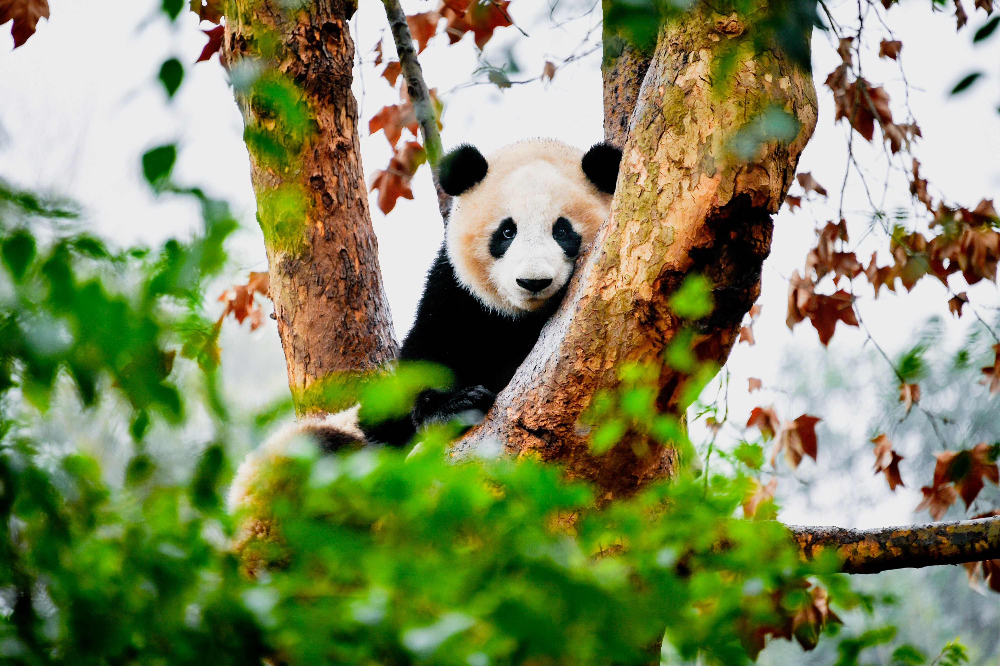
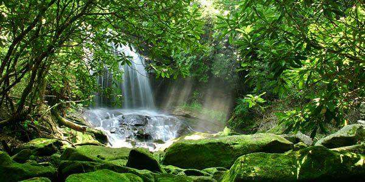

Biodiversity is the diversity of life on Earth. It is one of if not the most important aspects and reasons why all of us are alive and well right now. In layman's terms, it brings out the balance of life and proper functioning of our world as we know it, and due to numerous activities caused by our fellow-people, it is at risk.
How does biodiversity affect Earth? Whether big or small, short or tall, all organisms have an important role to play in balancing life. We are all interconnected in a sort of “web”, where our functions can affect others, an example of which is an ecosystem that provides us with clean air, food, water, and resources, among other things, like the Amazon Rainforest.

Biodiversity could also be useful as “back-ups” for ecosystems. If one species with a specific role does out, there could be different species who fit the role perfectly, due to biodiversity. One key driver in our ecosystems are ones that we do not expect to be -- insects, which provide roughly 70 - 90% of the food sources of the planet.
Now, why am I talking about this? Well, there is and will be a decline in our biodiversity. Why? Human greed. Human activities, like the introduction of invasive alien species and pollution, have tarnished the balance of life that we need for us to survive, which leads to more imbalances to the point where we too will die off from our own needs. Most scientists project that the state of biodiversity in our world will decline rapidly over the next century, so we need to take a stand. Luckily, many organizations, like WWF and ASEAN, have taken a stand against human exploitations and started campaigns and acts to prevent the loss of species.
The fate of the world is at risk, and we all need to take a stand. WE can do this in the simplest of ways. Throwing trash properly, being informed about the environment, and joining causes that help our planet can be very helpful. Now, what will you do to help?